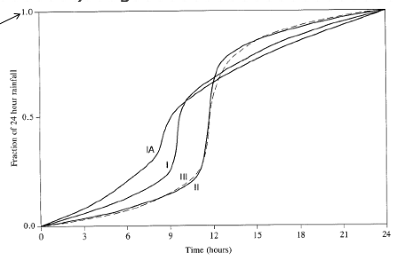
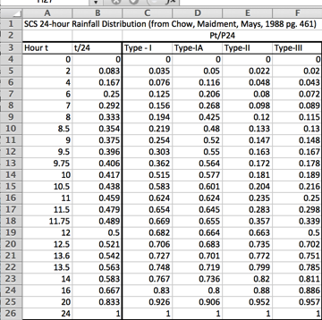

Precipitation Modeling¶
Risk Based Design Concepts
Probability Estimation Modeling
Design Storms
Historical Observations
Risk-Based Design Concepts¶
Risk-based design concepts involve incorporating considerations of potential risks and uncertainties into the design process to create more resilient and effective drainage systems. This approach recognizes that uncertainties, such as extreme weather events or changes in land use, can impact the performance of a design.
Key aspects include:
Risk Assessment
Engineers conduct a thorough risk assessment to identify potential hazards and vulnerabilities associated with drainage systems. This includes considering factors such as heavy rainfall, urbanization, climate change, and topographical characteristics.
Probabilistic Design
In contrast to deterministic design approaches, risk-based design incorporates probabilistic methods. Engineers analyze the probability of different events occurring and design the drainage system to manage the associated risks. This might involve considering the likelihood of certain rainfall intensities or the probability of exceeding design capacities.
Performance-Based Criteria
Design criteria are based on the desired performance of the system under various risk scenarios. This ensures that the system can adequately handle different levels of stress and remain functional even in extreme conditions.
Adaptability and Resilience
Systems are designed to be adaptable and resilient to changing conditions. This includes the ability to accommodate increased runoff due to urban development, changing precipitation patterns, or other unforeseen factors. Flexible designs can better withstand uncertainties.
Multi-Hazard Approach
Risk-based design considers multiple hazards that could impact drainage systems. For example, it might address both flood risk and the potential for erosion or sedimentation. This comprehensive approach helps create more robust and versatile drainage solutions.
Cost-Benefit Analysis
Engineers perform cost-benefit analyses to evaluate the economic implications of different design options. This involves weighing the costs of construction and maintenance against the potential damages and losses that could occur in the event of system failure.
Public Safety and Environmental Impact
Risk-based design prioritizes public safety and minimizes the environmental impact of drainage systems. This involves considering the consequences of system failure and designing solutions that protect communities and ecosystems.
Probability Estimation Modeling¶
Probability estimation modeling refers to the use of probability distributions to model or explain behavior in observed data. Once a distribution is selected, then the concept of risk (probability) can be explored for events (rainfalls, discharges, concentrations, etc.) of varying magnitudes. Generally two important “extremes” are important in engineering; relatively uncommon events (floods, plant explosions, etc.) and very common events (routine discharges, etc.). The concepts of analysis are the same, but the distribution models are very different. In fact, there is very little literature on the examination of very common events, yet this area is crucial in environmental engineering, and to a lesser extent in typical civil engineering applications.
Frequency Analysis¶
Frequency analysis is a type of probability estimation model that typically attempts to relate the behavior of some variable over some recurring time intervals. The time interval is assumed to be large enough so that the concept of “frequency” makes sense. If the time intervals are short, we are often dealing with a time-series that is handled using different tools. Underlying the idea of “long enough” is the concept of independence, that is the values of the variable are statistically independent, otherwise the variables are said to be serial (or auto) correlated.
Concept of T-year event
Extreme values (annual maximum or annual minimum) on some periodic time basis (usually one year) vary in magnitude (value) in an apparently random fashion. The T-year event concept is a way of expressing the probability of observing an event of some specified magnitude or smaller (larger) in one sampling period (one year). The formal definition is: The T-year event is an event of magnitude (value) over a long time-averaging period, whose average arrival time between events of such magnitude is T-years.
This definition is not very useful because it is often misinterpreted as an event of such magnitude occurring ON THE AVERAGE every T years. The operational definition (one that makes more sense) is that a T-year event is an event magnitude whose probability of occurrence in a single sampling interval is \(\frac{1}{T}\) (FEMA sometimes calls this the (\(\frac{1}{T}\)) chance event, and this is the correct way to state the probability). The concept can be extended to other sampling intervals, but almost never is in the regulatory world.
The concept assumes that the extreme values observed in sequential events are independent (serial correlation is nearly zero). Obviously if the sampling interval is short (daily) we expect strong serial correlation and the T-day event is an absurd statement. Typically we also assume that the process is stationary over the number of sampling intervals of record. This assumption is usually not realistic in a philosophical sense (it implies nothing changes with time), but in practice it is not bad because hydrologic processes are natural integrators and tend to smooth out minor changes. Over time, or where dramatic changes occur, we do expect changes in the statistics, and these can be detected by various hypothesis tests on censored data. Also, most textbooks, underemphasize the causal relationship between rainfall and runoff. A lot of the frequency methods are developed to explain behavior of extreme flows and implicitly assume that the extreme flow is caused by the extreme precipitation event. There is often little evidence (except in friggin’ hurricanes) of such cause because precipitation is a distributed (spatially and temporally) variable as compared to discharge at a single location on a watershed.
Notation
Typically something like:
\(P[ x > X ] = y\)
Most probability notations are similar to the above statement. We read them as “The probability that the random variable \(x\) will assume a value greater than \(X\) is equal to y”
The part of the expression “ x > X ” is the “event” so when you read probability texts they talk about universes and events but use above notation. It can look confusing at first, but with some familiarity you get used to the notation.
Risk/Loss
The probability in a single sampling interval is useful in its own sense, but we are often interested in the probability of occurrence (failure?) over many sampling periods. If the individual sampling interval events are IID (independent, identically distributed) then we satisfy the requirements of a Bernoulli process.
Bernoulli process
As a simple example, assume the probability that we will observe a cumulative daily rainfall depth equal to or greater than that of TS Allison is 0.10 (Ten percent).
What is the chance we would observe one or more TS Allison’s in a three-year sequence?
For such a small problem we can enumerate all possible outcomes. There are eight configurations we need to consider:
Year1 |
Year2 |
Year3 |
Probability |
|
|---|---|---|---|---|
1 |
No TSA |
No TSA |
No TSA |
(.9)(.9)(.9)=0.729 |
2 |
No TSA |
No TSA |
TSA |
(.9)(.9)(.1)=0.081 |
3 |
No TSA |
TSA |
No TSA |
(.9)(.1)(.9)=0.081 |
4 |
TSA |
No TSA |
No TSA |
(.1)(.9)(.9)=0.081 |
5 |
No TSA |
TSA |
TSA |
(.9)(.1)(.1)=0.009 |
6 |
TSA |
TSA |
No TSA |
(.1)(.1)(.9)=0.009 |
7 |
TSA |
No TSA |
TSA |
(.1)(.9)(.1)=0.009 |
8 |
TSA |
TSA |
TSA |
(.1)(.1)(.1)=0.001 |
So if we are concerned with one storm in the next three years the probability of that outcome is 0.243 (outcomes 2,3,4; probabilities of mutually exclusive events add).
The probability of three “good” years is 0.729. The probability of the “good” outcomes decreases as the sampling intervals are increased. So over the next 10 years, the chance of NO STORM is \(0.9^{10} = 0.348\).
Over the next 20 years, the chance of NO STORM is \(0.9^{20} = 0.121\). Over the next 50 years, the chance of NO STORM is \(0.9^{50} = 0.005\) (almost assured of a storm in the next 50 years). To pick the chances of \(k\) storms in \(n\) sampling intervals we use the binomial distribution.
\(P[k-\text{events},n-\text{samples},p_T]=\frac{n!}{(n-k)!k!}p^k_T(1-p_T)^{n-k}\)
This distribution enumerates all outcomes assuming unordered sampling without replacement.
There are several other common kinds of counting:
ordered with replacement (order matters), samples are replaced
unordered with replacement
ordered without replacement
Once we have probabilities we can evaluate risk. Insurance companies use these principles to determine your premiums.
Design Storms¶
A design storm is a theoretical or hypothetical weather event used by engineers, urban planners, and hydrologists as a standard to simulate and predict the potential impact of extreme weather conditions on a particular area. It is employed in the design and planning of various structures and systems to ensure they can withstand or manage the expected stresses caused by intense rainfall or other weather-related factors.
The characteristics of a design storm typically include:
Intensity: The rate of rainfall or snowfall during the storm, often measured in inches per hour or millimeters per hour.
Duration: The period over which the intense rainfall or weather event persists, often measured in hours.
Frequency: Often associated with a particular return period (e.g., 10-year storm, 50-year storm, 100-year storm), representing the average time interval between occurrences of storms of similar magnitude.
For instance, a 100-year design storm doesn’t mean it occurs once every century; rather, it indicates that there’s a 1% chance of this intensity of storm happening in any given year.
Design storms are used in various engineering and urban planning scenarios, such as:
Hydraulic Design: Designing stormwater drainage systems, sewers, culverts, and other structures to handle anticipated water flow during extreme weather events.
Floodplain Management: Assessing the potential impact of flooding and creating regulations for construction in flood-prone areas.
Infrastructure Design: Designing bridges, dams, and other structures to withstand the forces exerted by extreme weather conditions.
These storms are not exact events that have occurred in the past; rather, they’re created based on statistical analyses of historical weather data to provide a standard for planning and design purposes. They assist in creating structures and systems that can manage the potential stress of extreme weather events, ensuring safety and functionality within the built environment.
Design storms are statistical models of such temporal behavior and are used in hydrologic models when hydrographs need to be generated
Rainfall Distributions¶
Rainfall distributions represent temporal patterns of a storm.
A rainfall distribution is also called a hyetograph.
Rainfall distributions are used when we need to estimate an entire hydrograph.
Discrete Data Analysis
The Figure below is a representation of some continuous process. To extract values by measurements only occurs at discrete points in time. These samples are reconstructed in a variety of ways to restore the original representation.

Real data are always some kind of discrete sample
The “pulse” type is typical – and is called incremental data.
For instance, incremental rainfall would be the catch over some time interval (\(\Delta t\) in the figure)
An alternative way to represent the data is with a cumulative representation (which is the running sum of the incremental data)
Figure XX below depicts the relationship between incremental and cumulative representations. Each “block” represents the amount of rainfall for the time interval
The collection of blocks is called “incremental” rainfall (red)
The running sum of the blocks is the cumulative distribution (blue)
A particular blocck is indicated with a height of about one, and time duration also one. If for instance the block represents a depth the implication is that after one hour (from time 4 to 5 in the drawing) the depth added to some location is one unit.

If these are watershed inches, then the drawing sugests that from hour zero to one, zero inches of precipitation occur, from hour one to two, about 1/4 inch; from hour 2 to 3, about 0.4 inch; from hour 3 to 4, about 0.7 inch; and hour 4 to 5; 1 inch; and so on. If we tabulated the information we would have
Time |
Incremental Depth (Red) |
Accumulated Depth (Blue) |
|---|---|---|
0 |
0.00 |
0.00 |
1 |
0.25 |
0.00 |
2 |
0.40 |
0.25 |
3 |
0.70 |
0.65 |
4 |
1.00 |
1.35 |
5 |
0.50 |
2.35 |
Accumulating (running sum) the incremental is called “aggregation” (or just plain numerical integration); Differencing the cumulative is called “disaggregation.” For practical application its often handy to zero pad the leading and trailing edges so don’t have to worry too about forward/backward differencing issues.
Computational Thinking (ENGR-1330) - Accumulation
Consider the need to accumulate data such as:
Time (hours) |
Incremental Depth (inches) |
Accumulated Depth (inches) |
|---|---|---|
0 |
0.121 |
|
1 |
0.121 |
|
2 |
0.132 |
|
3 |
0.154 |
|
4 |
0.165 |
|
5 |
0.187 |
|
6 |
0.198 |
|
7 |
0.242 |
|
8 |
0.297 |
|
9 |
0.374 |
|
10 |
0.594 |
|
11 |
4.708 |
|
12 |
1.199 |
|
13 |
0.528 |
|
14 |
0.374 |
|
15 |
0.286 |
|
16 |
0.253 |
|
17 |
0.209 |
|
18 |
0.176 |
|
19 |
0.154 |
|
20 |
0.132 |
|
21 |
0.132 |
|
22 |
0.132 |
|
23 |
0.132 |
|
24 |
0.000 |
Our goal is to complete the last column, in this case its relatively straight forward because the time spacing is uniform. The approach is to perform numerical integration using rectangular panels looking backward in time.
time=[0,1,2,3,4,5,6,7,8,9,10,11,12,13,14,15,16,17,18,19,20,21,22,23,24]
increment=[0.121,0.121,0.132,0.154,0.165,0.187,0.198,0.242,0.297,0.374,0.594,4.708,1.199,0.528,0.374,0.286,0.253,0.209,0.176,0.154,0.132,0.132,0.132,0.132,0]
accumulate=[0 for i in range(len(time))]
for i in range(1,len(time)):
accumulate[i] = accumulate[i-1]+increment[i-1]
import matplotlib.pyplot as plt # the python plotting library
plottitle ='Precipitation for Somewhere USA '
mydata = plt.figure(figsize = (10,5)) # build a square drawing canvass from figure class
plt.plot(time, increment, c='red',drawstyle='steps') # step plot
plt.plot(time, accumulate, c='blue',drawstyle='steps') # step plot
plt.xlabel('Time (hours)')
plt.ylabel('Depth (inches)')
plt.legend(['Incremental Depth','Accumulated Depth'])
plt.title(plottitle)
plt.show()

Distributions are created from historical storms and analyzed to generate statistical models of rainfall – these models are called design storms. Design storm distributions are typically represented as dimensionless hyetographs
Some examples include:
NRCS Type Storms (24 hour, 6 hour)
Empirical Texas Hyetographs (TxHYETO-2015)
NRCS (SCS) Rainfall Type Curves¶
SCS(1973) analyzed DDF curves to develop dimensionless rainfall temporal patterns called type curves for four different regions in the US. SCS type curves are in the form of percentage mass (cumulative) curves based on 24-hr rainfall of the desired frequency. Intended for use with the SCS Curve Number runoff generation model!
Location selects the type curve

The 24-hour precipitation depth of desired frequency is specified (NOAA Atlas 14), then the SCS type curve is rescaled (multiplied by the known number) to get the time distribution.

A tabular representation is

A simple script to dimensionalize is listed below (along with the plotting script)
# SCS Type Curves
hour = [0,2,4,6,7,8,8.5,9,9.5,9.75,10,10.5,11,11.5,11.75,12,12.5,13.0,13.6,14,16,20,24]
type1 = [0,0.035,0.076,0.125,0.156,0.194,0.219,0.254,0.303,0.362,0.515,0.583,0.624,0.654,0.669,0.682,0.706,0.727,0.748,0.767,0.83,0.926,1]
type1A = [0,0.05,0.116,0.206,0.268,0.425,0.48,0.52,0.55,0.564,0.577,0.601,0.624,0.645,0.655,0.664,0.683,0.701,0.719,0.736,0.8,0.906,1]
type2 = [0,0.022,0.048,0.08,0.098,0.12,0.133,0.147,0.163,0.172,0.181,0.204,0.235,0.283,0.357,0.663,0.735,0.772,0.799,0.82,0.88,0.952,1]
type3 = [0,0.02,0.043,0.072,0.089,0.115,0.13,0.148,0.167,0.178,0.189,0.216,0.25,0.298,0.339,0.5,0.702,0.751,0.785,0.811,0.886,0.957,1]
t24 =[]
for i in range(len(hour)):
t24.append(hour[i]/24.0)
# dimensionalize
Ptotal = 10.0
T1D =[0 for i in range(len(hour))]
T1AD =[0 for i in range(len(hour))]
T2D =[0 for i in range(len(hour))]
T3D =[0 for i in range(len(hour))]
for i in range(len(hour)):
T1D[i]=Ptotal*type1[i]
T1AD[i]=Ptotal*type1A[i]
T2D[i]=Ptotal*type2[i]
T3D[i]=Ptotal*type3[i]
#plot
import matplotlib.pyplot as plt # the python plotting library
plottitle ='SCS Rainfall Type Curves for Total Depth =' + str(Ptotal) +' inches'
mydata = plt.figure(figsize = (10,5)) # build a square drawing canvass from figure class
plt.plot(hour, T1D, c='blue') # step plot
plt.plot(hour, T1AD, c='cyan') # step plot
plt.plot(hour, T2D, c='orange') # step plot
plt.plot(hour, T3D, c='red') # step plot
#plt.plot(time, accumulate, c='blue',drawstyle='steps') # step plot
plt.xlabel('Time (hours)')
plt.ylabel('Depth (inches)')
plt.legend(['Type 1','Type 1A','Type 2','Type 3'])
plt.title(plottitle)
plt.show()
A variant for 6-hour durations is

Using the type curves is straightforward
Use NOAA Atlas 14, TP-40, or other defendable source to set total depth, P for the 24 hour storm (or 6 hour storm)
Pick appropriate SCS type curve (location).
Multiply (rescale) the type curve with P to get the design mass curve.
If you need incremental values, differencing the rescaled mass curve can be used to develop the design hyetograph.
Texas Empirical Hyetograph-Based Design Storms¶
Alternative to SCS Type Curves for use in Texas are the Texas Empirical Hyetographs
Based on Texas data.
Reflects “front loading” observed in many real storms.
Rescales both time and depth.

The authors suggest use of the 50th percentile curve (median storm).
::{note} The 90th percentile is appropriate for high consequence of failure targets (hospitals, sewage treatment plants, water treatment plants, nuclear power plants, thermal power plants, airports,…)
- Multiply the time axis by the storm duration.
- Multiply the depth axis by the storm depth.
- Result is a design storm for given duration and AEP.
Historical Observations¶
The design storms are created from statistical models of observations.
Incorporating observed precipitation data offers a faithful representation of actual weather patterns and variability, capturing nuances that statistical design storm models may overlook. By using observed data, engineers can better assess real-world risks, enhancing the reliability and precision of infrastructure designs and flood mitigation strategies. Additionally, observed precipitation data provide valuable insights into localized climatic trends and extreme weather events, enabling proactive adaptation measures to address changing environmental conditions effectively.
At times, there might be motivation to study the source observations - so how to obtain data is important. There are likely multiple sources of data - here we will examine just a few.
NCDC¶
This is the easiest, and may suffice in many situations. The National Climatic Data Center maintains historical records of climate related data - in some locations over a century of data exist. Using our study area, and current online tools one can find gages near the study site.
https://www.ncei.noaa.gov/maps/daily/ will navigate to the NCDC server where daily data are available. The landing page will look something like:
I have already located our study site - so I’ll just zoom in. In the figure our area is the small yeller rectangles in West Texas. Zoomed into a useful scale:
We will select gages by drawing a polygon around them - the one gage close to the study site would be awesome, but it has a really short record, so we will get nearby gages and use some algorithm to map the records to the study site. To draw the polygon, use the tool on the layers panel, then choose polygon and draw the outline.
Now we can examine the gages - notice the Caprock Canyon SP gage only has a 3 year record, so alone kind of useless. But the other two extend the historical range considerably. Next we can add these to the cart for delivery.
Note
The delivery requires added information which will be demonstrated in class, plus we will grab some additional gages for trying to estimate depth over our study area using some averaging techniques.